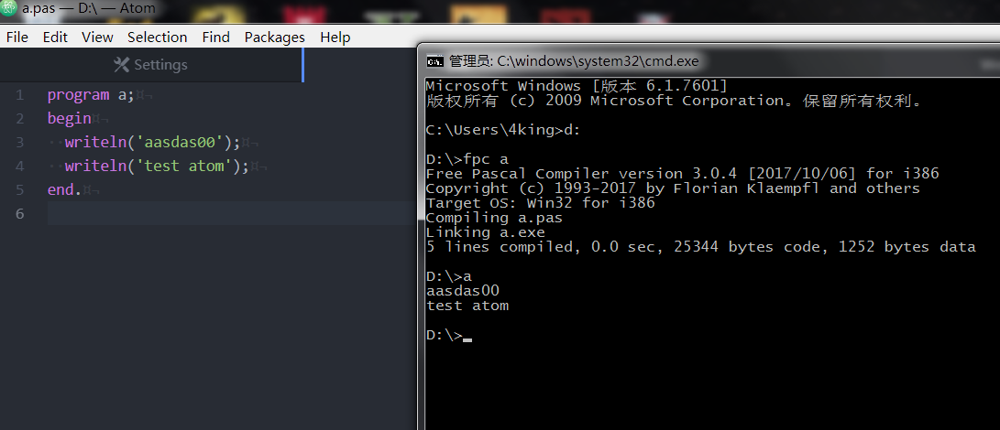
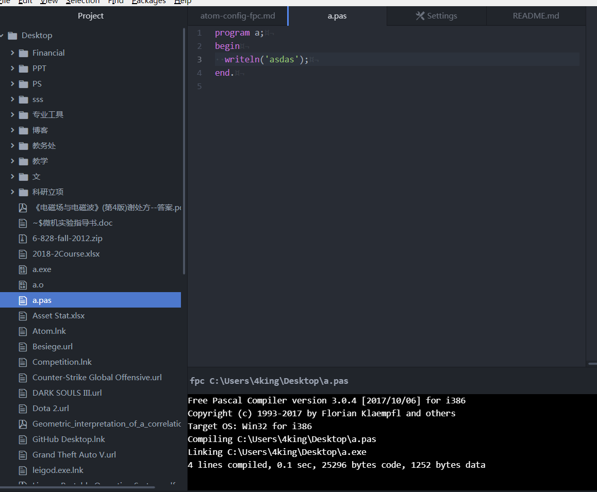

Atom 配置Pascal开发环境
我学的第一门编程语言是Pascal，为了参加noip学的。快10年过去了，delphi没人用了，pascal也即将被noip删除，而borland公司坟头草都两米高了。但是语言是个长尾，总还有人在玩玩的，fortan这么老不也有人用嘛。今天怀旧一下，配置一下Pascal开发环境，FPC作为IDE太丑而且更新越来越慢了。
我的环境是 Win7 SP1 + Atom + Free Pascal Compiler
配置Pascal编译器
首先下载FPC，我的版本是3.0.4, (https://sourceforge.net/projects/freepascal/)
然后安装，建议不在c盘，安装完毕后配置环境变量。Mac的话参考fpc的readme配置Path
我的电脑 → 右键 → 属性 → 高级系统设置 → 高级 → 环境变量 → 在系统变量之中找到path→ 点击编辑 → 在后面加入下面的路径
;D:\FPC\3.0.4\bin\i386-win32
→ 确定 → 确定
并且注意前面的英文分号;隔开
D:\FPC\3.0.4\bin\i386-win32是你的pascal编译器的所在目录，FPC就是Free Pascal Compiler
配置好命令行后，打开cmd，
键入fpc -h 会出现fpc的命令帮助就说明成功。
配置Atom
下载Atom https://atom.io/
Atom是github开发的新一代编辑器，我感觉很舒服，比sublime好用，尤其是它哪来写markdown。插件也很齐全。
选择Windows版下载。
安装完成后，在Welcome Guide里点击Open installer
安装package，其实就是插件，搜索pascal，选择langauge-pascal
是老外写的pascal语言支持的插件。
重启后，选File - New File保存成.pas后缀即可。
编译与运行
cmdLine方式
写完代码保存后，在命令行下进入你的pas文件所在目录
输入fpc 文件名（不带.pas） 回车，进行编译链接
再输入一次 文件名，回车就是运行

成功画面
Build 工具方式
Atom自带了项目build工具，有人在此基础上专门写了fpc的build工具build-fpc 在atom的package manager里搜索，安装.
新建好pas文件后，将pas文件放在一个你自己创建的文件夹下，最好是新建的，作为你的工程目录。然后点击File - Add Project Folder选中你的工程目录，再打开project管理器，鼠标移到atom左边界就有，按F7选中你要build的pas文件，按下F9build。无法自动运行，只能手动双击生成的exe
如果嫌编译信息的panel消失不爽，按F8固定
